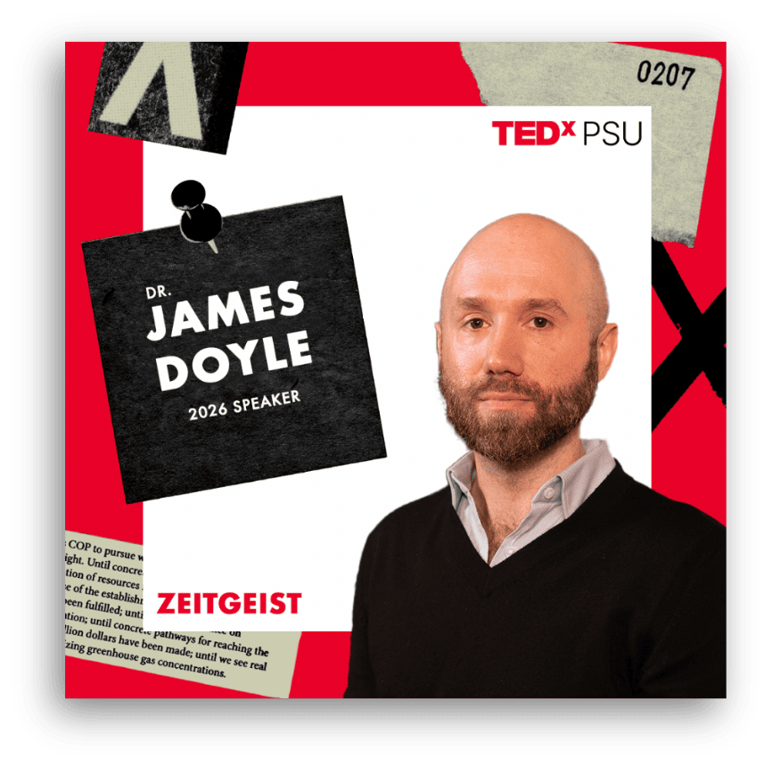

TEDxPSU · 2024–2026
TEDxPSU
Event Social · Campaign Motion
One campaign system.

Lynnzee Brown

James Doyle
Nina Lauharatanahirun

Cyanne Loyle

Jonte Taylor
Made for the feed.
Zeitgeist conference ↗Conference promotion and event-day content, presented in their original vertical format.
Conference day
Event atmosphere · Zeitgeist 2026
Inside Schwab
Venue tour · Zeitgeist 2026
The invitation
Conference promotion · Zeitgeist 2026
Paper Towns, in print.
2025 conference ↗The full conference program shows the event’s visual world, from the map and schedule to the speaker stories. My role was in marketing and the speaker-announcement rollout; the program is credited to the TEDxPSU design team.


Full program · TEDxPSU design team · February 8, 2025.
Campaign results.
TEDxPSU account performance during the Zeitgeist campaign. Results reflect the marketing team’s work across channels.
Last 90 days · exported February 18, 2026
Views from non-followers
73.8%Share of views from people outside the existing follower audience.
Nov 19, 2025 – Feb 16, 2026
Read the daily values
| Date | Impressions | Clicks |
|---|
Source: supplied Instagram Insights and LinkedIn exports, captured February 18, 2026. Instagram uses the platform’s rolling windows; LinkedIn dates are shown separately. LinkedIn engagement rate is (clicks + reactions + comments + reposts) ÷ impressions. Views and reach are different measures.
Email, from announcement to countdown.
TEDxPSU Mailchimp campaign reports · captured February 18, 2026 · bot filtering on
| Campaign | Delivered | Open rate | Click rate |
|---|---|---|---|
| Theme announcement Oct 29, 2025 | 406 | 79.3% | 1.7% |
| Save the date Nov 18, 2025 | 407 | 68.6% | 0.74% |
| 22 days away Jan 16, 2026 | 394 | 26.6% | 4.1% |
| 4 days away Feb 3, 2026 | 394 | 22.6% | 3.6% |
Rates are reported by Mailchimp as of the capture date. Each email has a different time since send; the rows are campaign snapshots, not a controlled performance comparison.
Campaign + conference.
My work developed from the Paper Towns speaker-announcement campaign into marketing leadership for Zeitgeist, connecting social, email, creative and conference-day communications.
- Eight-person team leadership
- Social, email, paid, print and campus outreach
- Speaker launches and conference visual systems
- On-camera interviews and event video
- Weekly KPI reporting and testing
- Speaker communications and logistics
- Sponsor materials and pitch development